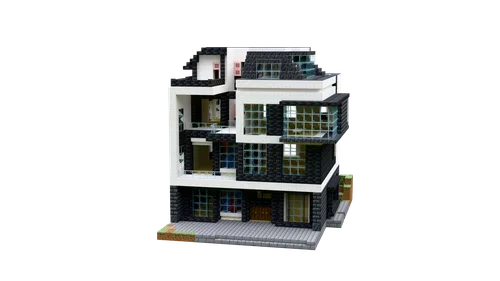
乡村自建房
白色水平线条搭深色玻璃窗的多层自建房，各层有突出的阳台与平台。
室内几何估算：有顶地面分布4个高度层；最大封闭区域地面266格，最大净空矩形9×18格；床位1，含床封闭区域1。
住宅 · 现代 · 大占地 · 白桦木 · 深色橡木 · 樱花木 · 苍白橡木 · 多层 · 阳台 · 大窗 · 白墙 · 多层有顶空间 · 大房间净空 · 内饰待布置29×25×22 · 4553 格 · 5 段
水体、耕地种植结合现场另外安排；可选配色：原配色、易获取材料、金合欢暖色
室内平面图 · 材料与替换规则 · 处理后结构预览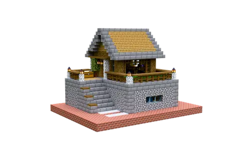
双层农田生存小基地
抬高的石质底座，上层木屋配灰色尖屋顶，适合把农田与生活区结合。
室内几何估算：有顶地面分布2个高度层；最大封闭区域地面61格，最大净空矩形4×8格；床位2，含床封闭区域1。
住宅 · 中世纪 · 田园 · 农田 · 两层 · 含内饰 · 中等占地 · 橡木 · 云杉木 · 尖顶 · 石基座 · 多层有顶空间 · 多床位18×13×14 · 922 格 · 1 段
水体、耕地种植结合现场另外安排；花盆保留，花草由小克现场挑选；可选配色：原配色、易获取材料、金合欢暖色
室内平面图 · 材料与替换规则 · 处理后结构预览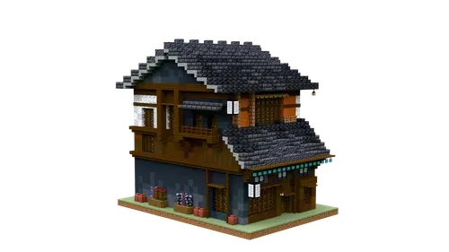
日式住宅·二
层叠灰瓦屋顶配木质外廊与阳台，适合逐层安排生活用途。
室内几何估算：有顶地面分布3个高度层；最大封闭区域地面37格，最大净空矩形6×3格；床位0，含床封闭区域0。
住宅 · 日式 · 大占地 · 橡木 · 云杉木 · 白桦木 · 丛林木 · 金合欢木 · 深色橡木 · 诡异木 · 灰瓦屋顶 · 木结构 · 阳台 · 层叠屋檐 · 多层 · 多层有顶空间 · 内饰待布置20×27×29 · 4222 格 · 11 段
施工使用39格临时泥土支撑，收尾图纸会收起；水体、耕地种植结合现场另外安排；花盆保留，花草由小克现场挑选；告示牌位置保留，文字由小克现场填写；可选配色：原配色、易获取材料、金合欢暖色
室内平面图 · 材料与替换规则 · 处理后结构预览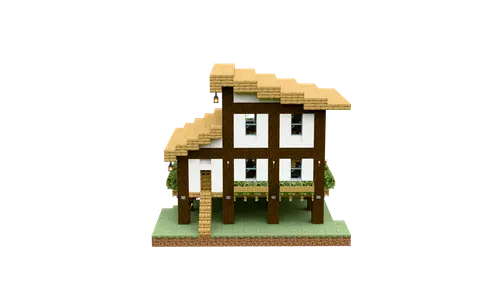
水上小屋·二
浅色斜屋顶配深色梁柱和白墙，底部架空，带入口台阶与门廊。
室内几何估算：有顶地面分布2个高度层；最大封闭区域地面72格，最大净空矩形11×5格；床位1，含床封闭区域1。
住宅 · 中世纪 · 水边 · 水上 · 含内饰 · 中等占地 · 橡木 · 云杉木 · 高脚屋 · 尖顶 · 白墙 · 浅色屋顶 · 门廊 · 多层有顶空间17×15×22 · 1051 格 · 2 段
告示牌位置保留，文字由小克现场填写；可选配色：原配色、易获取材料、金合欢暖色
室内平面图 · 材料与替换规则 · 处理后结构预览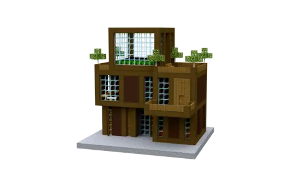
深色橡木现代生存基地
深色木框架配大面积玻璃的现代住宅，平顶可另行布置露台。
室内几何估算：有顶地面分布2个高度层；最大封闭区域地面51格，最大净空矩形3×9格；床位2，含床封闭区域0。 平面阅读补充：上下层围绕中部功能核心展开，大窗与外廊较多，床位集中在上层。
住宅 · 现代 · 深色 · 含内饰 · 大占地 · 橡木 · 云杉木 · 深色橡木 · 平顶 · 两层 · 大窗 · 多层有顶空间 · 多床位20×22×22 · 2696 格 · 4 段
施工使用6格临时泥土支撑，收尾图纸会收起；水体、耕地种植结合现场另外安排；花盆保留，花草由小克现场挑选；可选配色：原配色、易获取材料、金合欢暖色
室内平面图 · 材料与替换规则 · 处理后结构预览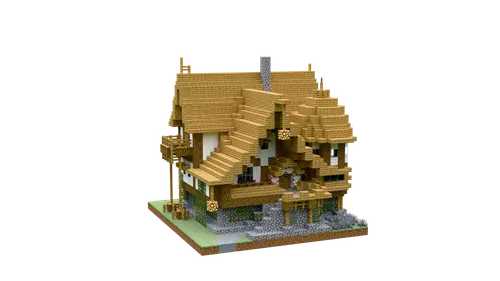
三层别墅
多组浅木尖顶错落组合的三层住宅，适合希望楼层丰富、外观热闹的家。
室内几何估算：有顶地面分布3个高度层；最大封闭区域地面62格，最大净空矩形6×6格；床位5，含床封闭区域1。 平面阅读补充：适合分层安排生活用途，转角和分隔较多，主厅按现有连通区域布置。
住宅 · 中世纪 · 家庭住宅 · 三层 · 含内饰 · 大占地 · 橡木 · 云杉木 · 白桦木 · 多山墙 · 木屋 · 多层有顶空间 · 多床位23×21×21 · 2911 格 · 3 段
49格悬空细部转为现场布置：vine 49；水体、耕地种植结合现场另外安排；可选配色：原配色、易获取材料、金合欢暖色
室内平面图 · 材料与替换规则 · 处理后结构预览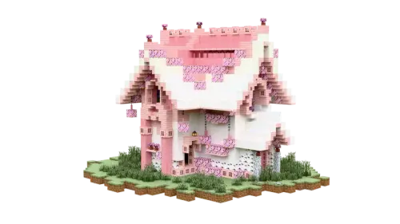
樱花小屋
粉色与白色尖顶住宅，窗边、入口和外墙布置了丰富花草。
室内几何估算：有顶地面分布2个高度层；最大封闭区域地面66格，最大净空矩形13×3格；床位3，含床封闭区域0。
住宅 · 幻想 · 粉色 · 含内饰 · 大占地 · 白桦木 · 樱花木 · 粉色屋顶 · 白墙 · 花草装饰 · 尖顶 · 童话 · 多层有顶空间 · 多床位31×21×28 · 2637 格 · 7 段
施工使用13格临时泥土支撑，收尾图纸会收起；花盆保留，花草由小克现场挑选；告示牌位置保留，文字由小克现场填写；可选配色：原配色、易获取材料、金合欢暖色
室内平面图 · 材料与替换规则 · 处理后结构预览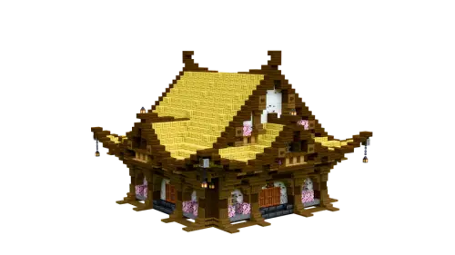
竹顶日式房屋
竹色大屋顶配白墙、深木边框和门廊，整体轮廓低缓开阔。
室内几何估算：有顶地面分布1个高度层；开放空间与露台可按用途划分；床位0，含床封闭区域0。
住宅 · 日式 · 大占地 · 橡木 · 云杉木 · 白桦木 · 金合欢木 · 深色橡木 · 樱花木 · 竹 · 竹材 · 黄色屋顶 · 白墙 · 门廊 · 内饰待布置25×18×25 · 2321 格 · 3 段
可选配色：原配色、易获取材料、金合欢暖色
室内平面图 · 材料与替换规则 · 处理后结构预览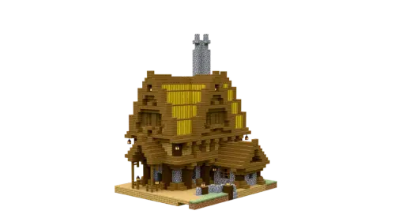
中世纪海港小屋
高挑木屋顶配架空支柱与入口台阶，适合海港、岸边或整平场地。
室内几何估算：有顶地面分布3个高度层；最大封闭区域地面52格，最大净空矩形10×3格；床位1，含床封闭区域0。
住宅 · 中世纪 · 水边 · 含内饰 · 中等占地 · 橡木 · 云杉木 · 白桦木 · 尖顶 · 木屋 · 高脚屋 · 多层有顶空间19×24×16 · 2199 格 · 2 段
告示牌位置保留，文字由小克现场填写；可选配色：原配色、易获取材料、金合欢暖色
室内平面图 · 材料与替换规则 · 处理后结构预览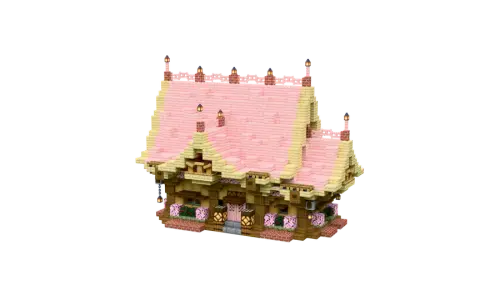
樱花度假小山庄·全内饰
粉色大屋顶配浅色木框架和鲜花，适合温柔明亮的度假住宅。
室内几何估算：有顶地面分布2个高度层；最大封闭区域地面49格，最大净空矩形6×5格；床位1，含床封闭区域0。
住宅 · 幻想 · 粉色 · 含内饰 · 中等占地 · 橡木 · 云杉木 · 白桦木 · 深色橡木 · 红树木 · 樱花木 · 尖顶 · 花草装饰 · 度假 · 多层有顶空间15×17×21 · 1510 格 · 3 段
施工使用7格临时泥土支撑，收尾图纸会收起；水体、耕地种植结合现场另外安排；花盆保留，花草由小克现场挑选；告示牌位置保留，文字由小克现场填写；可选配色：原配色、易获取材料、金合欢暖色
室内平面图 · 材料与替换规则 · 处理后结构预览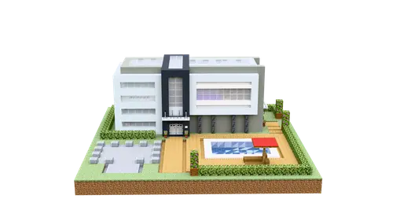
泳池小院别墅
带泳池庭院的白色现代住宅，平顶、多层体块和大窗形成整洁轮廓。
室内几何估算：有顶地面分布2个高度层；最大封闭区域地面88格，最大净空矩形10×5格；床位1，含床封闭区域1。 平面阅读补充：长条主楼配庭院泳池，庭院占地较大，室内以横向长房间为主。
住宅 · 现代 · 家庭住宅 · 含内饰 · 大占地 · 橡木 · 云杉木 · 白桦木 · 苍白橡木 · 泳池 · 庭院 · 两层 · 平顶 · 多层有顶空间30×12×30 · 3099 格 · 6 段
水体、耕地种植结合现场另外安排；花盆保留，花草由小克现场挑选；可选配色：原配色、易获取材料、金合欢暖色
室内平面图 · 材料与替换规则 · 处理后结构预览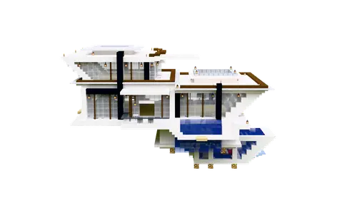
钓鱼小屋
白色现代体块与多层露台向水面展开，大窗和错层平台带来宽阔轮廓。
室内几何估算：有顶地面分布3个高度层；最大封闭区域地面212格，最大净空矩形11×13格；床位3，含床封闭区域1。
住宅 · 现代 · 幻想 · 含内饰 · 大占地 · 橡木 · 云杉木 · 白桦木 · 深色橡木 · 水边 · 白墙 · 大窗 · 露台 · 错层 · 多层有顶空间 · 多床位 · 大房间净空43×26×32 · 5430 格 · 13 段
10格悬空细部转为现场布置：fire_coral_fan 2、tube_coral_fan 3、horn_coral_fan 4、bubble_coral_fan 1；水体、耕地种植结合现场另外安排；花盆保留，花草由小克现场挑选；告示牌位置保留，文字由小克现场填写；可选配色：原配色、易获取材料、金合欢暖色
室内平面图 · 材料与替换规则 · 处理后结构预览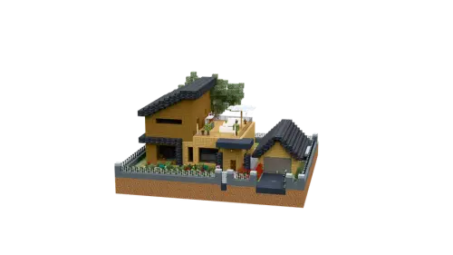
郊区小别墅
木色墙面配深灰斜屋顶的郊区别墅，入口门廊和侧面平台适合日常生活布置。
室内几何估算：有顶地面分布2个高度层；最大封闭区域地面49格，最大净空矩形6×4格；床位4，含床封闭区域2。 平面阅读补充：主层公共区与上层含床区域分开，露台占有明显空间。
住宅 · 现代 · 家庭住宅 · 含内饰 · 大占地 · 橡木 · 云杉木 · 白桦木 · 金合欢木 · 深色橡木 · 红树木 · 绯红木 · 诡异木 · 木结构 · 斜屋顶 · 门廊 · 露台 · 多层有顶空间 · 多床位 · 多卧室区域33×18×32 · 6044 格 · 12 段
施工使用121格临时泥土支撑，收尾图纸会收起；水体、耕地种植结合现场另外安排；花盆保留，花草由小克现场挑选；告示牌位置保留，文字由小克现场填写；可选配色：原配色、易获取材料、金合欢暖色
室内平面图 · 材料与替换规则 · 处理后结构预览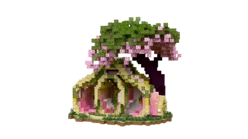
春日憩所
树根式木构拱门托起繁茂绿化屋顶，适合林间休憩和开放式生活布置。
室内几何估算：有顶地面分布3个高度层；最大封闭区域地面18格，最大净空矩形6×3格；床位3，含床封闭区域1。
住宅 · 中世纪 · 幻想 · 含内饰 · 大占地 · 白桦木 · 金合欢木 · 樱花木 · 竹 · 绯红木 · 树屋 · 绿化屋顶 · 林间 · 拱门 · 开放空间 · 多层有顶空间 · 多床位24×29×32 · 3213 格 · 74 段
3格悬空细部转为现场布置：bamboo_hanging_sign 2、crimson_hanging_sign 1；施工使用2131格临时泥土支撑，收尾图纸会收起；花盆保留，花草由小克现场挑选；告示牌位置保留，文字由小克现场填写；可选配色：原配色、易获取材料、金合欢暖色
室内平面图 · 材料与替换规则 · 处理后结构预览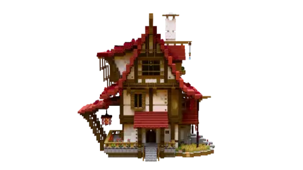
枫叶庄园
高挑红色屋顶与木梁立面组成的多层庄园，适合喜欢明显层次和竖向轮廓的方案。
室内几何估算：有顶地面分布4个高度层；最大封闭区域地面146格，最大净空矩形8×8格；床位1，含床封闭区域0。
住宅 · 中世纪 · 家庭住宅 · 含内饰 · 大占地 · 橡木 · 云杉木 · 白桦木 · 丛林木 · 金合欢木 · 深色橡木 · 红树木 · 竹 · 绯红木 · 红色屋顶 · 陡尖顶 · 多层 · 烟囱 · 多层有顶空间 · 大房间净空39×40×39 · 9337 格 · 19 段
2格悬空细部转为现场布置：spruce_hanging_sign 2；施工使用9格临时泥土支撑，收尾图纸会收起；水体、耕地种植结合现场另外安排；黑曜石门框保留，传送门点火在现场安排；花盆保留，花草由小克现场挑选；告示牌位置保留，文字由小克现场填写；可选配色：原配色、易获取材料、金合欢暖色
室内平面图 · 材料与替换规则 · 处理后结构预览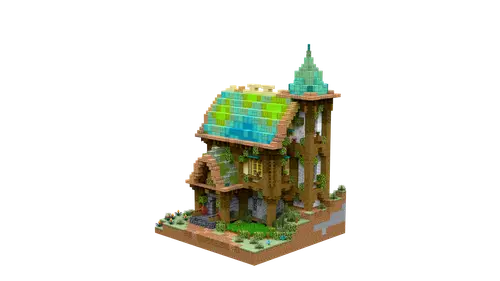
中型幻想屋
青色屋顶搭配侧边小塔和突出平台的幻想住宅，适合喜欢有趣轮廓的方案。
室内几何估算：有顶地面分布3个高度层；最大封闭区域地面101格，最大净空矩形11×9格；床位1，含床封闭区域1。
住宅 · 中世纪 · 幻想 · 含内饰 · 大占地 · 橡木 · 云杉木 · 白桦木 · 丛林木 · 深色橡木 · 红树木 · 樱花木 · 竹 · 诡异木 · 青色屋顶 · 塔楼 · 阳台 · 多层有顶空间 · 大房间净空22×30×21 · 3802 格 · 3 段
5格悬空细部转为现场布置：spruce_hanging_sign 5；水体、耕地种植结合现场另外安排；花盆保留，花草由小克现场挑选；告示牌位置保留，文字由小克现场填写；可选配色：原配色、易获取材料、金合欢暖色
室内平面图 · 材料与替换规则 · 处理后结构预览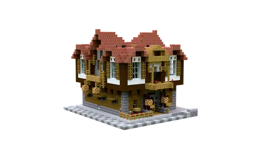
砖顶小屋·三
红色砖瓦多山墙屋顶配木柱与浅色墙，正面窗户和门廊层次清楚。
室内几何估算：有顶地面分布3个高度层；最大封闭区域地面45格，最大净空矩形4×5格；床位8，含床封闭区域0。
住宅 · 中世纪 · 欧式 · 砖瓦屋顶 · 含内饰 · 中等占地 · 橡木 · 云杉木 · 白桦木 · 红色屋顶 · 多山墙 · 家庭住宅 · 多层有顶空间 · 多床位22×17×18 · 2529 格 · 2 段
7格悬空细部转为现场布置：vine 7；告示牌位置保留，文字由小克现场填写；可选配色：原配色、易获取材料、金合欢暖色
室内平面图 · 材料与替换规则 · 处理后结构预览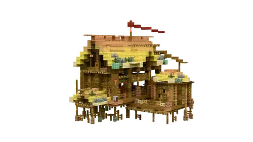
黄顶吊脚楼
黄色层叠屋顶配架空木柱和外侧露台，适合庭院或高脚住宅方案。
室内几何估算：有顶地面分布2个高度层；开放空间与露台可按用途划分；床位0，含床封闭区域0。
住宅 · 中式 · 大占地 · 橡木 · 云杉木 · 白桦木 · 丛林木 · 金合欢木 · 深色橡木 · 红树木 · 竹 · 黄色屋顶 · 高脚屋 · 露台 · 层叠屋檐 · 开放空间 · 多层有顶空间 · 内饰待布置20×20×24 · 1624 格 · 3 段
施工使用50格临时泥土支撑，收尾图纸会收起；花盆保留，花草由小克现场挑选；告示牌位置保留，文字由小克现场填写；可选配色：原配色、易获取材料、金合欢暖色
室内平面图 · 材料与替换规则 · 处理后结构预览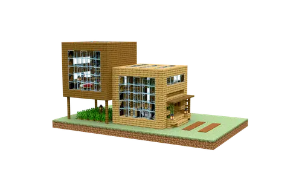
双方块农田木屋
两块木质体量组合的现代生存住宅，大窗与平顶平台方便联系农田。
室内几何估算：有顶地面分布2个高度层；最大封闭区域地面21格，最大净空矩形3×4格；床位2，含床封闭区域1。
住宅 · 现代 · 田园 · 农田 · 木屋 · 含内饰 · 中等占地 · 橡木 · 云杉木 · 平顶 · 大窗 · 多层有顶空间 · 多床位22×11×13 · 811 格 · 2 段
水体、耕地种植结合现场另外安排；花盆保留，花草由小克现场挑选；告示牌位置保留，文字由小克现场填写；可选配色：原配色、易获取材料、金合欢暖色
室内平面图 · 材料与替换规则 · 处理后结构预览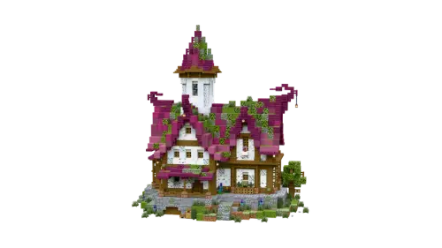
粉顶童话小屋
粉紫色陡尖屋顶搭配错落山墙和绿植，童话感较强。
室内几何估算：有顶地面分布3个高度层；最大封闭区域地面47格，最大净空矩形5×4格；床位5，含床封闭区域2。
住宅 · 欧式 · 幻想 · 粉色 · 含内饰 · 大占地 · 橡木 · 云杉木 · 白桦木 · 深色橡木 · 樱花木 · 绯红木 · 已去装饰烟雾 · 粉紫色 · 陡尖顶 · 多山墙 · 花草装饰 · 童话 · 多层有顶空间 · 多床位 · 多卧室区域27×31×30 · 4024 格 · 15 段
已省去7格蜘蛛网装饰烟雾；施工使用8格临时泥土支撑，收尾图纸会收起；花盆保留，花草由小克现场挑选；告示牌位置保留，文字由小克现场填写；可选配色：原配色、易获取材料、金合欢暖色
室内平面图 · 材料与替换规则 · 处理后结构预览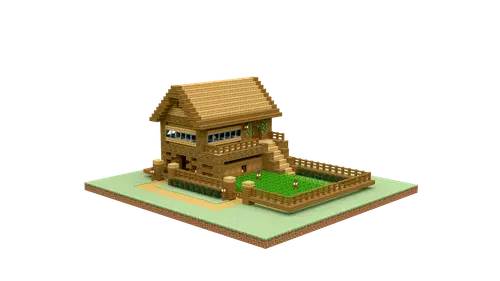
双层农田小院木屋
浅木两层住宅搭配农田和小院，屋顶平台便于增加生活设施。
室内几何估算：有顶地面分布3个高度层；最大封闭区域地面44格，最大净空矩形4×11格；床位2，含床封闭区域1。
住宅 · 中世纪 · 田园 · 农田 · 两层 · 木屋 · 含内饰 · 大占地 · 橡木 · 云杉木 · 庭院 · 平顶 · 多层有顶空间 · 多床位31×13×28 · 1824 格 · 6 段
水体、耕地种植结合现场另外安排；花盆保留，花草由小克现场挑选；告示牌位置保留，文字由小克现场填写；可选配色：原配色、易获取材料、金合欢暖色
室内平面图 · 材料与替换规则 · 处理后结构预览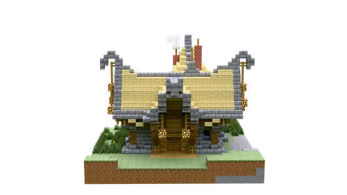
中世纪大房屋·三
左右对称的双山墙大房屋，浅色屋顶与白墙搭配深色梁柱，装饰烟雾已省去。
室内几何估算：有顶地面分布2个高度层；最大封闭区域地面51格，最大净空矩形6×4格；床位2，含床封闭区域0。
住宅 · 中世纪 · 家庭住宅 · 含内饰 · 大占地 · 橡木 · 云杉木 · 白桦木 · 丛林木 · 已去装饰烟雾 · 对称 · 双山墙 · 浅色屋顶 · 白墙 · 多层有顶空间 · 多床位25×17×21 · 1713 格 · 3 段
已省去4格蜘蛛网装饰烟雾；水体、耕地种植结合现场另外安排；告示牌位置保留，文字由小克现场填写；可选配色：原配色、易获取材料、金合欢暖色
室内平面图 · 材料与替换规则 · 处理后结构预览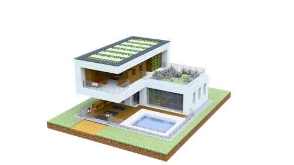
泳池小别墅
横向舒展的白色现代别墅，配泳池、整排窗和二层平台。
室内几何估算：有顶地面分布2个高度层；最大封闭区域地面56格，最大净空矩形9×3格；床位1，含床封闭区域0。
住宅 · 现代 · 家庭住宅 · 含内饰 · 大占地 · 橡木 · 云杉木 · 泳池 · 两层 · 平顶 · 白墙 · 多层有顶空间18×10×23 · 1061 格 · 2 段
水体、耕地种植结合现场另外安排；花盆保留，花草由小克现场挑选；告示牌位置保留，文字由小克现场填写；可选配色：原配色、易获取材料、金合欢暖色
室内平面图 · 材料与替换规则 · 处理后结构预览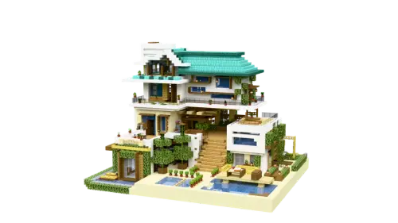
夏日小屋
青色屋顶、白墙与花草平台层层错落，适合明亮的夏日度假住宅。
室内几何估算：有顶地面分布4个高度层；最大封闭区域地面40格，最大净空矩形8×5格；床位2，含床封闭区域1。
住宅 · 现代 · 含内饰 · 大占地 · 橡木 · 云杉木 · 白桦木 · 丛林木 · 金合欢木 · 深色橡木 · 樱花木 · 竹 · 青色屋顶 · 白墙 · 露台 · 花草装饰 · 度假 · 多层有顶空间 · 多床位29×25×35 · 4652 格 · 8 段
7格悬空细部转为现场布置：vine 7；水体、耕地种植结合现场另外安排；黑曜石门框保留，传送门点火在现场安排；花盆保留，花草由小克现场挑选；告示牌位置保留，文字由小克现场填写；可选配色：原配色、易获取材料、金合欢暖色
室内平面图 · 材料与替换规则 · 处理后结构预览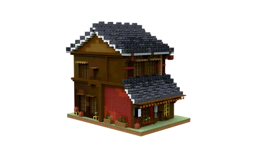
日式住宅·一
深灰瓦顶、红色下层墙面与木质阳台组合的日式住宅。
室内几何估算：有顶地面分布2个高度层；最大封闭区域地面260格，最大净空矩形13×20格；床位0，含床封闭区域0。 平面阅读补充：按宽阔空壳整理，较大的开间适合后续划分公共区和卧室。
住宅 · 日式 · 大占地 · 云杉木 · 白桦木 · 金合欢木 · 深色橡木 · 红树木 · 灰瓦屋顶 · 红墙 · 深色木 · 阳台 · 多层 · 多层有顶空间 · 大房间净空 · 内饰待布置19×26×27 · 2978 格 · 7 段
1格悬空细部转为现场布置：white_banner 1；施工使用36格临时泥土支撑，收尾图纸会收起；花盆保留，花草由小克现场挑选；告示牌位置保留，文字由小克现场填写；可选配色：原配色、易获取材料、金合欢暖色
室内平面图 · 材料与替换规则 · 处理后结构预览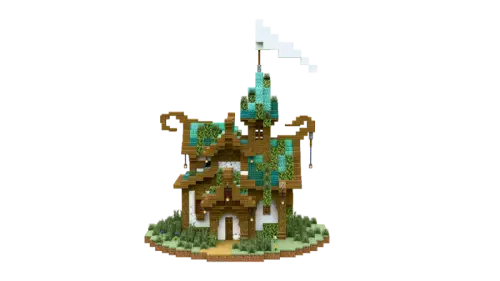
精灵小屋·Kuky
青色尖顶与侧边小塔形成错落轮廓，门窗周围有花草点缀。
室内几何估算：有顶地面分布2个高度层；最大封闭区域地面41格，最大净空矩形7×4格；床位2，含床封闭区域1。
住宅 · 中世纪 · 幻想 · 含内饰 · 大占地 · 橡木 · 云杉木 · 白桦木 · 丛林木 · 诡异木 · 青色屋顶 · 塔楼 · 尖顶 · 花草装饰 · 多层有顶空间 · 多床位25×30×25 · 2032 格 · 8 段
施工使用99格临时泥土支撑，收尾图纸会收起；花盆保留，花草由小克现场挑选；可选配色：原配色、易获取材料、金合欢暖色
室内平面图 · 材料与替换规则 · 处理后结构预览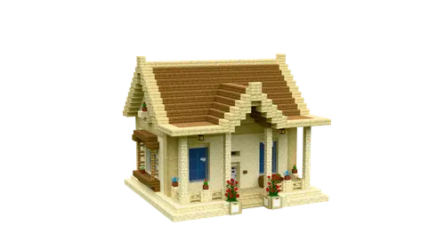
白桦木砂岩小屋
白桦木与砂岩的明亮小屋，正面尖山墙突出，适合清爽田园配色。
室内几何估算：有顶地面分布2个高度层；最大封闭区域地面63格，最大净空矩形10×4格；床位2，含床封闭区域1。
住宅 · 欧式 · 浅色 · 含内饰 · 中等占地 · 橡木 · 云杉木 · 白桦木 · 尖顶 · 白墙 · 田园 · 多层有顶空间 · 多床位16×13×15 · 1065 格 · 2 段
水体、耕地种植结合现场另外安排；花盆保留，花草由小克现场挑选；告示牌位置保留，文字由小克现场填写；可选配色：原配色、易获取材料、金合欢暖色
室内平面图 · 材料与替换规则 · 处理后结构预览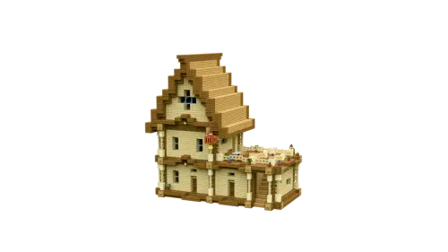
三层木制别墅
浅色墙体、深色梁柱与木屋顶的三层别墅，侧面有突出的阳台平台。
室内几何估算：有顶地面分布3个高度层；最大封闭区域地面62格，最大净空矩形9×6格；床位2，含床封闭区域1。 平面阅读补充：竖向三层与长方形室内搭配，公共区和睡眠区适合分层安排。
住宅 · 中世纪 · 欧式 · 家庭住宅 · 三层 · 木屋 · 含内饰 · 中等占地 · 橡木 · 云杉木 · 白桦木 · 金合欢木 · 尖顶 · 阳台 · 浅色 · 多层有顶空间 · 多床位22×21×15 · 1589 格 · 2 段
花盆保留，花草由小克现场挑选；可选配色：原配色、易获取材料、金合欢暖色
室内平面图 · 材料与替换规则 · 处理后结构预览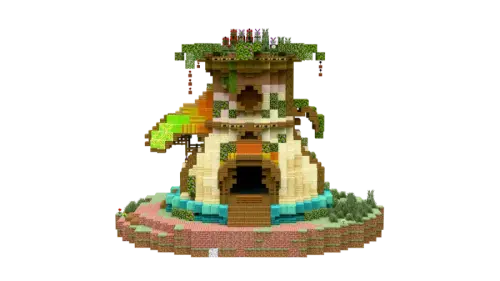
布吉舞曲之家
木质拱门、绿化屋顶和平台组成的幻想住宅，开放空间与水景相连。
室内几何估算：有顶地面分布3个高度层；最大封闭区域地面25格，最大净空矩形3×5格；床位3，含床封闭区域1。
住宅 · 中世纪 · 欧式 · 幻想 · 含内饰 · 大占地 · 橡木 · 云杉木 · 白桦木 · 丛林木 · 金合欢木 · 诡异木 · 绿化屋顶 · 拱门 · 露台 · 水景 · 开放空间 · 多层有顶空间 · 多床位28×25×35 · 4747 格 · 10 段
施工使用74格临时泥土支撑，收尾图纸会收起；花盆保留，花草由小克现场挑选；告示牌位置保留，文字由小克现场填写；可选配色：原配色、易获取材料、金合欢暖色
室内平面图 · 材料与替换规则 · 处理后结构预览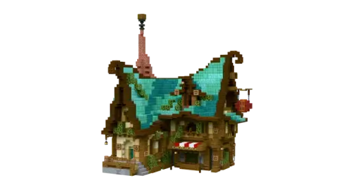
商人之家
青色尖屋顶与高烟囱搭配木梁门廊，适合作为有辨识度的日常住宅。
室内几何估算：有顶地面分布3个高度层；最大封闭区域地面41格，最大净空矩形4×8格；床位2，含床封闭区域1。
住宅 · 中世纪 · 幻想 · 含内饰 · 大占地 · 橡木 · 云杉木 · 白桦木 · 丛林木 · 金合欢木 · 深色橡木 · 红树木 · 诡异木 · 青色屋顶 · 烟囱 · 门廊 · 木屋 · 多层有顶空间 · 多床位24×30×25 · 2547 格 · 5 段
施工使用15格临时泥土支撑，收尾图纸会收起；花盆保留，花草由小克现场挑选；告示牌位置保留，文字由小克现场填写；可选配色：原配色、易获取材料、金合欢暖色
室内平面图 · 材料与替换规则 · 处理后结构预览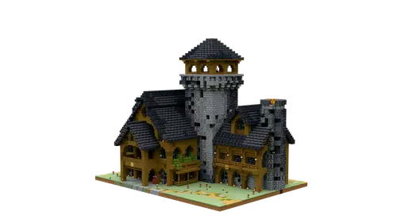
中世纪庄园
深灰屋顶围绕中央塔楼展开，木结构立面和庭院形成完整庄园。
室内几何估算：有顶地面分布3个高度层；最大封闭区域地面330格，最大净空矩形10×18格；床位1，含床封闭区域1。 平面阅读补充：长厅、塔楼和多层空间组合，适合按不同用途划分区域。
住宅 · 中世纪 · 家庭住宅 · 含内饰 · 大占地 · 橡木 · 云杉木 · 深色橡木 · 红树木 · 灰色屋顶 · 多山墙 · 塔楼 · 庭院 · 多层有顶空间 · 大房间净空42×35×31 · 7589 格 · 18 段
施工使用21格临时泥土支撑，收尾图纸会收起；花盆保留，花草由小克现场挑选；可选配色：原配色、易获取材料、金合欢暖色
室内平面图 · 材料与替换规则 · 处理后结构预览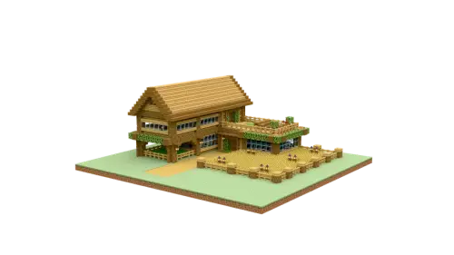
双层L型农田木屋
L形木屋围合院落和种植空间，适合把住宅、田园与露台连起来。
室内几何估算：有顶地面分布2个高度层；开放空间与露台可按用途划分；床位2，含床封闭区域0。
住宅 · 中世纪 · 田园 · 农田 · 两层 · 木屋 · 含内饰 · 大占地 · 橡木 · 云杉木 · 庭院 · L形 · 露台 · 多层有顶空间 · 多床位36×13×33 · 2732 格 · 6 段
水体、耕地种植结合现场另外安排；花盆保留，花草由小克现场挑选；告示牌位置保留，文字由小克现场填写；可选配色：原配色、易获取材料、金合欢暖色
室内平面图 · 材料与替换规则 · 处理后结构预览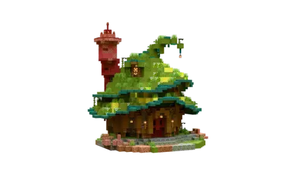
隐居
错落屋顶上覆盖绿植，配侧边塔楼与露台，适合林间隐居风格。
室内几何估算：有顶地面分布3个高度层；最大封闭区域地面38格，最大净空矩形5×4格；床位1，含床封闭区域1。
住宅 · 中世纪 · 幻想 · 含内饰 · 大占地 · 橡木 · 云杉木 · 白桦木 · 丛林木 · 金合欢木 · 红树木 · 诡异木 · 绿化屋顶 · 林间 · 塔楼 · 多层有顶空间24×26×24 · 2829 格 · 4 段
1格悬空细部转为现场布置：short_grass 1；施工使用53格临时泥土支撑，收尾图纸会收起；水体、耕地种植结合现场另外安排；花盆保留，花草由小克现场挑选；告示牌位置保留，文字由小克现场填写；可选配色：原配色、易获取材料、金合欢暖色
室内平面图 · 材料与替换规则 · 处理后结构预览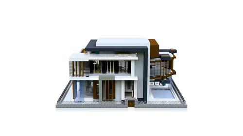
现代别墅·二
白色与深灰框架组合的现代大宅，大窗、平台和庭院形成舒展的横向轮廓。
室内几何估算：有顶地面分布3个高度层；最大封闭区域地面178格，最大净空矩形9×8格；床位6，含床封闭区域0。 平面阅读补充：包含围合庭院和多层平台，主厅选择结合室内净空与庭院比例。
住宅 · 现代 · 家庭住宅 · 含内饰 · 大占地 · 橡木 · 云杉木 · 白桦木 · 深色橡木 · 绯红木 · 诡异木 · 白墙 · 平顶 · 大窗 · 露台 · 庭院 · 多层有顶空间 · 多床位 · 大房间净空40×20×32 · 6799 格 · 10 段
水体、耕地种植结合现场另外安排；花盆保留，花草由小克现场挑选；告示牌位置保留，文字由小克现场填写；可选配色：原配色、易获取材料、金合欢暖色
室内平面图 · 材料与替换规则 · 处理后结构预览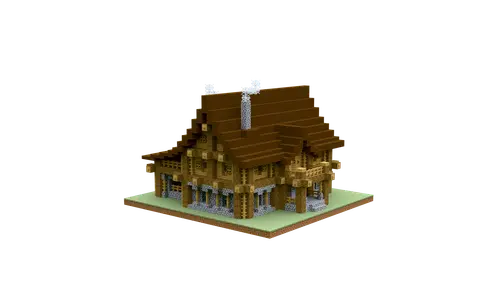
大型农舍
横向展开的大型农舍，长屋顶配连续门廊，适合优先考虑占地和家庭生活的方案。
室内几何估算：有顶地面分布3个高度层；最大封闭区域地面149格，最大净空矩形5×9格；床位1，含床封闭区域1。 平面阅读补充：横向展开的侧翼较多，室内以长条房间和中部连通区为主，适合分配公共区与卧室。
住宅 · 中世纪 · 田园 · 农田 · 含内饰 · 大占地 · 橡木 · 深色橡木 · 已去装饰烟雾 · 长屋 · 尖顶 · 门廊 · 家庭住宅 · 多层有顶空间27×18×29 · 4201 格 · 8 段
已省去11格蜘蛛网装饰烟雾；花盆保留，花草由小克现场挑选；可选配色：原配色、易获取材料、金合欢暖色
室内平面图 · 材料与替换规则 · 处理后结构预览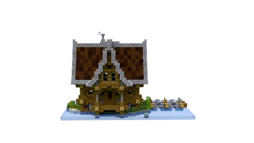
海滨住宅
深色屋顶木住宅配临水平台和门廊，适合后续按生活需要安排内饰。
室内几何估算：有顶地面分布3个高度层；最大封闭区域地面41格，最大净空矩形4×5格；床位0，含床封闭区域0。
住宅 · 中世纪 · 大占地 · 橡木 · 云杉木 · 深色橡木 · 已去装饰烟雾 · 水边 · 深色屋顶 · 木结构 · 露台 · 门廊 · 多层有顶空间 · 内饰待布置32×21×22 · 2793 格 · 3 段
已省去1格蜘蛛网装饰烟雾；4格悬空细部转为现场布置：sugar_cane 4；水体、耕地种植结合现场另外安排；可选配色：原配色、易获取材料、金合欢暖色
室内平面图 · 材料与替换规则 · 处理后结构预览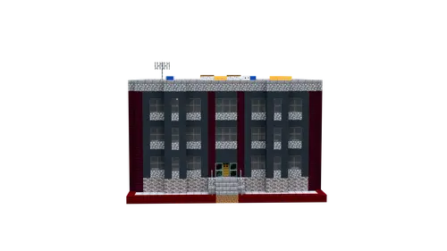
公寓二·格林
成排窗户的现代公寓，深色立面配红色侧墙，适合较大规模的多人住宅。
室内几何估算：有顶地面分布3个高度层；最大封闭区域地面25格，最大净空矩形3×6格；床位24，含床封闭区域12。 平面阅读补充：多个重复的小居住单元，含床区域较多，适合多人分房。
住宅 · 现代 · 家庭住宅 · 含内饰 · 大占地 · 橡木 · 云杉木 · 白桦木 · 金合欢木 · 深色橡木 · 公寓 · 多层 · 平顶 · 多层有顶空间 · 多床位 · 多卧室区域27×19×24 · 6333 格 · 9 段
花盆保留，花草由小克现场挑选；可选配色：原配色、易获取材料、金合欢暖色
室内平面图 · 材料与替换规则 · 处理后结构预览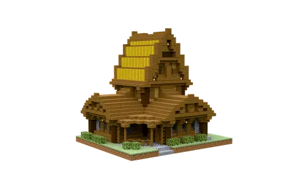
乡村别墅
暖色木质乡村住宅，尖顶与入口门廊层次分明。
室内几何估算：有顶地面分布3个高度层；最大封闭区域地面58格，最大净空矩形10×3格；床位1，含床封闭区域0。 平面阅读补充：主层围绕楼梯和转角布置，上层适合安排睡眠区。
住宅 · 中世纪 · 田园 · 家庭住宅 · 含内饰 · 中等占地 · 橡木 · 云杉木 · 白桦木 · 木屋 · 尖顶 · 门廊 · 多层有顶空间21×20×18 · 2076 格 · 2 段
可选配色：原配色、易获取材料、金合欢暖色
室内平面图 · 材料与替换规则 · 处理后结构预览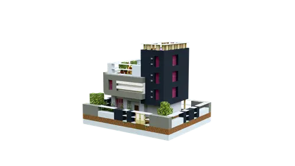
混凝土小别墅
白色平台与深色立面形成竖向现代住宅，带多层阳台和大窗。
室内几何估算：有顶地面分布2个高度层；最大封闭区域地面21格，最大净空矩形4×4格；床位1，含床封闭区域0。
住宅 · 现代 · 家庭住宅 · 含内饰 · 中等占地 · 橡木 · 云杉木 · 白桦木 · 丛林木 · 深色橡木 · 白墙 · 深色立面 · 平顶 · 阳台 · 多层 · 大窗 · 多层有顶空间16×17×20 · 1922 格 · 2 段
水体、耕地种植结合现场另外安排；花盆保留，花草由小克现场挑选；可选配色：原配色、易获取材料、金合欢暖色
室内平面图 · 材料与替换规则 · 处理后结构预览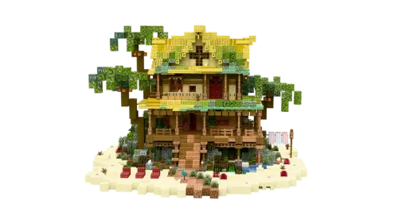
海滨小筑
绿化屋顶和花草露台围绕白墙木结构展开，适合海滨与水边度假生活。
室内几何估算：有顶地面分布4个高度层；最大封闭区域地面27格，最大净空矩形3×6格；床位3，含床封闭区域0。
住宅 · 现代 · 幻想 · 含内饰 · 大占地 · 橡木 · 云杉木 · 白桦木 · 丛林木 · 深色橡木 · 红树木 · 竹 · 绯红木 · 诡异木 · 已去装饰烟雾 · 水边 · 露台 · 绿化屋顶 · 白墙 · 花草装饰 · 多层有顶空间 · 多床位34×21×31 · 3444 格 · 16 段
已省去1格蜘蛛网装饰烟雾；6格悬空细部转为现场布置：jungle_hanging_sign 4、dark_oak_hanging_sign 2；施工使用551格临时泥土支撑，收尾图纸会收起；水体、耕地种植结合现场另外安排；花盆保留，花草由小克现场挑选；告示牌位置保留，文字由小克现场填写；可选配色：原配色、易获取材料、金合欢暖色
室内平面图 · 材料与替换规则 · 处理后结构预览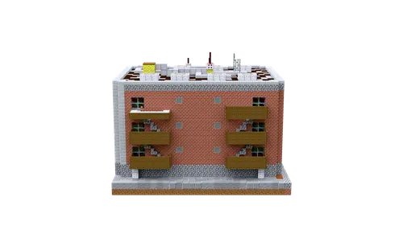
莱顿公寓·格林
砖色立面配平顶花园的现代公寓，窗户与入口呈连续排列。
室内几何估算：有顶地面分布3个高度层；最大封闭区域地面98格，最大净空矩形7×9格；床位12，含床封闭区域4。 平面阅读补充：多层重复房间与多个床位组合，适合多人分房。
住宅 · 现代 · 家庭住宅 · 含内饰 · 大占地 · 橡木 · 云杉木 · 白桦木 · 丛林木 · 深色橡木 · 公寓 · 砖墙 · 平顶 · 楼顶花园 · 多层 · 多层有顶空间 · 多床位 · 大房间净空 · 多卧室区域28×21×25 · 6334 格 · 9 段
花盆保留，花草由小克现场挑选；告示牌位置保留，文字由小克现场填写；可选配色：原配色、易获取材料、金合欢暖色
室内平面图 · 材料与替换规则 · 处理后结构预览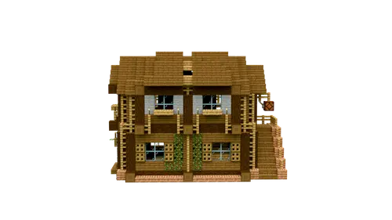
中世纪农舍
浅木两层农舍，正面窗户、阳台栏杆和入口台阶完整。
室内几何估算：有顶地面分布3个高度层；最大封闭区域地面34格，最大净空矩形4×7格；床位4，含床封闭区域0。
住宅 · 中世纪 · 田园 · 农田 · 含内饰 · 中等占地 · 橡木 · 云杉木 · 白桦木 · 丛林木 · 两层 · 木屋 · 大窗 · 多层有顶空间 · 多床位15×14×19 · 1379 格 · 3 段
施工使用6格临时泥土支撑，收尾图纸会收起；可选配色：原配色、易获取材料、金合欢暖色
室内平面图 · 材料与替换规则 · 处理后结构预览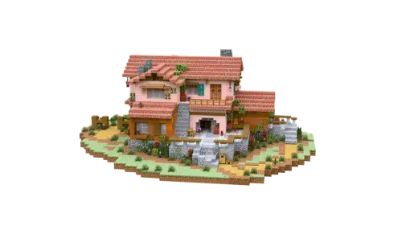
意式别墅
低缓屋顶与粉色墙面的意式别墅，庭院、门廊和水景形成轻松的生活氛围。
室内几何估算：有顶地面分布2个高度层；最大封闭区域地面34格，最大净空矩形6×5格；床位2，含床封闭区域1。 平面阅读补充：庭院与门廊占地较大，主楼室内较紧凑。
住宅 · 欧式 · 家庭住宅 · 含内饰 · 大占地 · 橡木 · 云杉木 · 丛林木 · 红树木 · 樱花木 · 竹 · 诡异木 · 粉色 · 庭院 · 门廊 · 阳台 · 水景 · 多层有顶空间 · 多床位39×16×42 · 4643 格 · 11 段
施工使用2格临时泥土支撑，收尾图纸会收起；水体、耕地种植结合现场另外安排；花盆保留，花草由小克现场挑选；告示牌位置保留，文字由小克现场填写；可选配色：原配色、易获取材料、金合欢暖色
室内平面图 · 材料与替换规则 · 处理后结构预览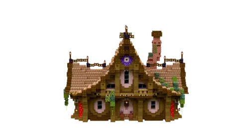
樱花紫水晶生存基地·全内饰
樱花木与紫水晶形成粉紫色双山墙住宅，带完整内饰和侧面高屋顶。
室内几何估算：有顶地面分布2个高度层；最大封闭区域地面17格，最大净空矩形3×4格；床位1，含床封闭区域1。
住宅 · 中世纪 · 幻想 · 粉色 · 含内饰 · 大占地 · 橡木 · 云杉木 · 丛林木 · 金合欢木 · 深色橡木 · 红树木 · 樱花木 · 紫色 · 双山墙 · 家庭住宅 · 多层有顶空间19×21×29 · 2987 格 · 9 段
2格悬空细部转为现场布置：cherry_hanging_sign 2；施工使用14格临时泥土支撑，收尾图纸会收起；水体、耕地种植结合现场另外安排；花盆保留，花草由小克现场挑选；告示牌位置保留，文字由小克现场填写；可选配色：原配色、易获取材料、金合欢暖色
室内平面图 · 材料与替换规则 · 处理后结构预览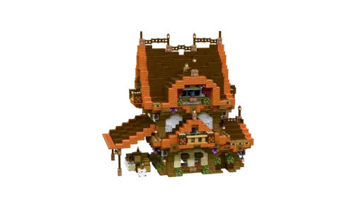
金合欢深色橡木小屋·全内饰
橙色陡尖顶搭深色木骨架，入口两侧花草丰富，带完整内饰。
室内几何估算：有顶地面分布3个高度层；最大封闭区域地面33格，最大净空矩形6×3格；床位2，含床封闭区域0。
住宅 · 中世纪 · 幻想 · 深色 · 含内饰 · 中等占地 · 橡木 · 云杉木 · 白桦木 · 丛林木 · 金合欢木 · 深色橡木 · 红树木 · 樱花木 · 陡尖顶 · 橙色屋顶 · 深色梁柱 · 花草装饰 · 多层有顶空间 · 多床位16×20×22 · 1758 格 · 2 段
水体、耕地种植结合现场另外安排；花盆保留，花草由小克现场挑选；告示牌位置保留，文字由小克现场填写；可选配色：原配色、易获取材料、金合欢暖色
室内平面图 · 材料与替换规则 · 处理后结构预览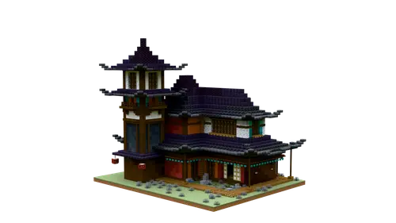
日式住宅·三
宽阔庭院配紫色层叠屋顶和外廊，是这批体量较大的日式外观模板。
室内几何估算：有顶地面分布4个高度层；最大封闭区域地面55格，最大净空矩形6×4格；床位0，含床封闭区域0。
住宅 · 日式 · 大占地 · 云杉木 · 白桦木 · 金合欢木 · 深色橡木 · 红树木 · 竹 · 诡异木 · 紫色屋顶 · 层叠屋檐 · 庭院 · 多层 · 多层有顶空间 · 内饰待布置40×35×33 · 6585 格 · 31 段
施工使用292格临时泥土支撑，收尾图纸会收起；水体、耕地种植结合现场另外安排；告示牌位置保留，文字由小克现场填写；可选配色：原配色、易获取材料、金合欢暖色
室内平面图 · 材料与替换规则 · 处理后结构预览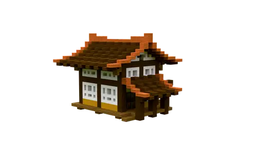
日式小屋第三弹
橙色低坡大屋顶、深木梁和白墙，入口与庭院有明显日式风格。
室内几何估算：有顶地面分布2个高度层；开放空间与露台可按用途划分；床位2，含床封闭区域0。
住宅 · 日式 · 含内饰 · 中等占地 · 橡木 · 云杉木 · 金合欢木 · 深色橡木 · 橙色屋顶 · 白墙 · 庭院 · 多层有顶空间 · 多床位18×14×19 · 1064 格 · 2 段
可选配色：原配色、易获取材料、金合欢暖色
室内平面图 · 材料与替换规则 · 处理后结构预览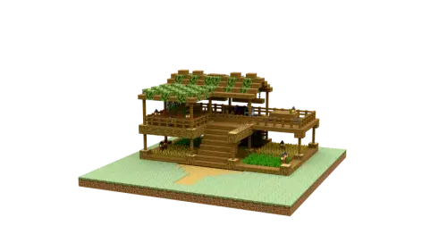
双人农田木屋
上下分层的木质生存住宅，屋顶与平台结合种植空间。
室内几何估算：有顶地面分布2个高度层；开放空间与露台可按用途划分；床位4，含床封闭区域0。
住宅 · 中世纪 · 田园 · 农田 · 木屋 · 含内饰 · 大占地 · 橡木 · 云杉木 · 平顶 · 两层 · 多层有顶空间 · 多床位23×11×23 · 1130 格 · 3 段
施工使用5格临时泥土支撑，收尾图纸会收起；水体、耕地种植结合现场另外安排；花盆保留，花草由小克现场挑选；可选配色：原配色、易获取材料、金合欢暖色
室内平面图 · 材料与替换规则 · 处理后结构预览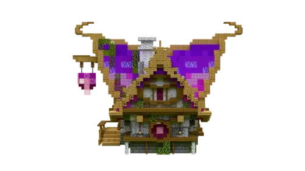
奥术旅馆
紫色尖屋顶和木质门廊组成的奥术风住宅，适合喜欢鲜明配色的方案。
室内几何估算：有顶地面分布2个高度层；最大封闭区域地面71格，最大净空矩形12×3格；床位1，含床封闭区域1。
住宅 · 中世纪 · 幻想 · 含内饰 · 大占地 · 橡木 · 云杉木 · 丛林木 · 深色橡木 · 樱花木 · 绯红木 · 紫色屋顶 · 尖顶 · 门廊 · 多层有顶空间21×21×31 · 2668 格 · 6 段
水体、耕地种植结合现场另外安排；花盆保留，花草由小克现场挑选；告示牌位置保留，文字由小克现场填写；可选配色：原配色、易获取材料、金合欢暖色
室内平面图 · 材料与替换规则 · 处理后结构预览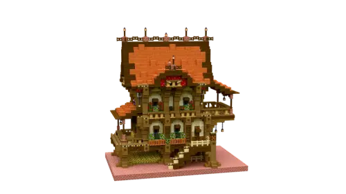
金合欢顶三层小楼
金合欢色屋顶覆盖多层立面，窗边花草与入口台阶丰富。
室内几何估算：有顶地面分布3个高度层；最大封闭区域地面53格，最大净空矩形7×5格；床位1，含床封闭区域1。 平面阅读补充：底部开放平台与上部生活层组合，适合保留门廊和外部活动空间。
住宅 · 中世纪 · 幻想 · 三层 · 含内饰 · 大占地 · 橡木 · 云杉木 · 白桦木 · 金合欢木 · 深色橡木 · 橙色屋顶 · 花草装饰 · 家庭住宅 · 多层有顶空间16×27×25 · 2689 格 · 5 段
水体、耕地种植结合现场另外安排；花盆保留，花草由小克现场挑选；告示牌位置保留，文字由小克现场填写；可选配色：原配色、易获取材料、金合欢暖色
室内平面图 · 材料与替换规则 · 处理后结构预览东韵雅居
灰色层叠屋檐覆盖木结构立面，门廊与平台体现中式住宅意趣。
室内几何估算：有顶地面分布3个高度层；开放空间与露台可按用途划分；床位1，含床封闭区域0。 平面阅读补充：环绕外廊与开放空间较多，生活区适合按需要进一步分隔。
住宅 · 中式 · 含内饰 · 大占地 · 橡木 · 云杉木 · 竹 · 木结构 · 灰瓦屋顶 · 层叠屋檐 · 门廊 · 多层有顶空间25×25×24 · 3880 格 · 5 段
花盆保留，花草由小克现场挑选；告示牌位置保留，文字由小克现场填写；可选配色：原配色、易获取材料、金合欢暖色
室内平面图 · 材料与替换规则 · 处理后结构预览垂钓小屋
架空木屋配高挑尖顶和长入口台阶，适合水边钓鱼与观景。
室内几何估算：有顶地面分布2个高度层；最大封闭区域地面55格，最大净空矩形3×13格；床位1，含床封闭区域1。
住宅 · 中世纪 · 含内饰 · 大占地 · 橡木 · 云杉木 · 丛林木 · 深色橡木 · 红树木 · 竹 · 水边 · 高脚屋 · 尖顶 · 木屋 · 码头 · 观景 · 多层有顶空间17×27×30 · 1939 格 · 6 段
施工使用11格临时泥土支撑，收尾图纸会收起；花盆保留，花草由小克现场挑选；告示牌位置保留，文字由小克现场填写；可选配色：原配色、易获取材料、金合欢暖色
室内平面图 · 材料与替换规则 · 处理后结构预览玫瑰木庄园
深红色多山墙屋顶搭配白墙和深色梁柱，花草围绕的庄园外观鲜明。
室内几何估算：有顶地面分布3个高度层；最大封闭区域地面181格，最大净空矩形7×9格；床位2，含床封闭区域1。 平面阅读补充：上部有较大的封闭净空矩形，适合保留一间较宽敞的房间。
住宅 · 欧式 · 幻想 · 家庭住宅 · 含内饰 · 大占地 · 橡木 · 云杉木 · 白桦木 · 丛林木 · 深色橡木 · 红树木 · 绯红木 · 诡异木 · 红色屋顶 · 多山墙 · 白墙 · 庄园 · 花草装饰 · 多层有顶空间 · 多床位 · 大房间净空37×29×37 · 7746 格 · 20 段
施工使用55格临时泥土支撑，收尾图纸会收起；水体、耕地种植结合现场另外安排；花盆保留，花草由小克现场挑选；告示牌位置保留，文字由小克现场填写；可选配色：原配色、易获取材料、金合欢暖色
室内平面图 · 材料与替换规则 · 处理后结构预览橡木小屋
绿化屋顶覆盖暖色木屋，配入口门廊，适合自然朴素的林间生活。
室内几何估算：有顶地面分布2个高度层；最大封闭区域地面129格，最大净空矩形4×12格；床位3，含床封闭区域1。
住宅 · 中世纪 · 幻想 · 含内饰 · 大占地 · 橡木 · 云杉木 · 白桦木 · 丛林木 · 深色橡木 · 苍白橡木 · 竹 · 诡异木 · 绿化屋顶 · 木屋 · 门廊 · 林间 · 多层有顶空间 · 多床位25×19×23 · 2663 格 · 4 段
施工使用16格临时泥土支撑，收尾图纸会收起；水体、耕地种植结合现场另外安排；花盆保留，花草由小克现场挑选；告示牌位置保留，文字由小克现场填写；可选配色：原配色、易获取材料、金合欢暖色
室内平面图 · 材料与替换规则 · 处理后结构预览现代公寓楼·二
整齐白色立面与成排窗户的现代公寓，适合分配多个居住单元。
室内几何估算：有顶地面分布3个高度层；最大封闭区域地面78格，最大净空矩形13×3格；床位15，含床封闭区域9。
住宅 · 现代 · 家庭住宅 · 含内饰 · 大占地 · 橡木 · 云杉木 · 白桦木 · 丛林木 · 金合欢木 · 深色橡木 · 公寓 · 平顶 · 白墙 · 多层 · 多层有顶空间 · 多床位 · 多卧室区域22×18×32 · 5831 格 · 8 段
花盆保留，花草由小克现场挑选；告示牌位置保留，文字由小克现场填写；可选配色：原配色、易获取材料、金合欢暖色
室内平面图 · 材料与替换规则 · 处理后结构预览